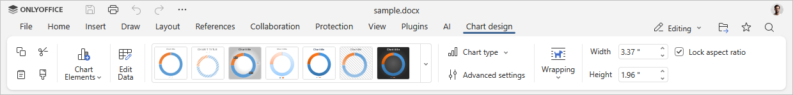
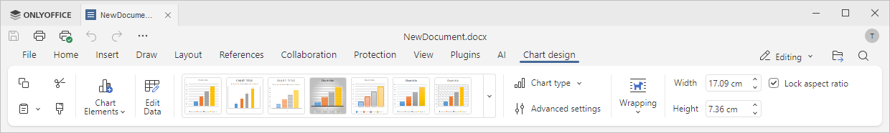

The Chart Design tab of the Document Editor allows managing the appearance and layout of the selected chart. To learn how to insert a chart, please refer to this article.
The corresponding window of the Online Document Editor:

The corresponding window of the Desktop Document Editor:

Using this tab, you can:
- manage chart elements such as the chart title, data labels, and legend,
- edit the chart data,
- choose a chart design from the available presets,
- change the chart type (Column, Line, Pie, and others),
- access advanced chart settings,
- set the text wrapping style for the chart,
- adjust the chart width and height manually,
- lock the aspect ratio when resizing.